Introdução
Plano de Aula
- Por que aprender uma linguagem de programação?
- Por que o R?
- Instalação da linguagem R e do Software Rstudio;
- Apresentação do ambiente do Rstudio;
- Obejtos, funções e Argumentos.
- Importando dados
- Transformação de dados
Por que aprender uma linguagem de programação?
- Aprender a programar é muito importante quando desejamos entender e interpretar os dados.
- Se você trabalha ou deseja trabalhar com dados, programar é uma habilidade de extrema relevância.
Linguagens para Ciência de Dados
Existem diversas linguagens/ferramentas: R, Python, SAS, SQL, Matlab, Stata, Aplicações de BI etc.
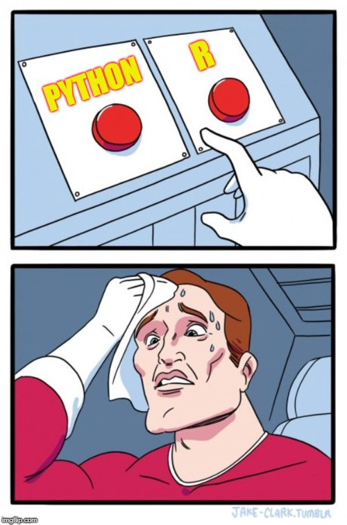
Cabe ao cientista de dados avaliar qual é a ferramenta mais adequada para alcançar seus objetivos.
Linguagens para Ciência de Dados

- Implementação da linguagem S
- Foco em análise e visualizações de dados
- Linguagem focada em análises
- Sintaxe orientada à funções
- Implementação da linguagem C
- Foco na leitura do código e produtividade
- Linguagem de propósito geral
- Sintaxe orientada à objetos
Linguagens para Ciência de dados
# Carregando pacotes e dados
library(readr)
library(dplyr)
dados <- read_csv("data.csv")
# Extrair colunas
dados_selec <- select(dados, c(1,2,3))
# Gráficos de duas variáveis
plot(dados_selec$x, dados_selec$y)
# Treinar modelo de regressão linear
reg <- lm(y ~., data = dados_selec)
# Realizar predições
reg_pred <- predict(reg, newdata = dados_selec)# Carregando pacotes e dados
import pandas as pd
from sklearn.linear_model import LinearRegression
dados <- pd.read_csv("data.csv")
# Extrair colunas
x = dados.iloc([1, 2, 3])
y = dados.y
# Gráficos de duas variáveis
dados.plot(x = 'variável', y = 'variável')
# Treinar modelo de regressão linear
reg = LinearRegression()
reg.fit(x, y)
# Realizar predições
reg.predict(x)Orientação
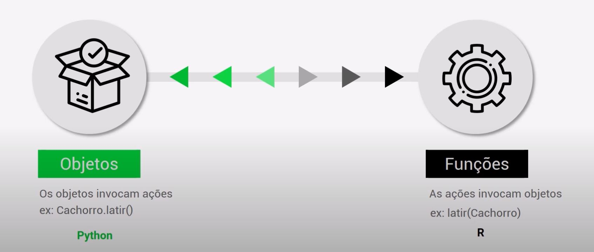
Sobre o R
- A linguagem R surgiu em 1995, derivada da linguagem S;
- Possui inúmeros pacotes (mais de 17 mil), com vantagem para a aplicação da Estatística Avançada e uma vasta comunidade de suporte, além de fortes capacidades voltadas ao Data Science.
- CRAN (Comprehensive R Archive Network) é o repositório principal da linguagem R em que cada usuário pode contribuir com novos pacotes (que são coleções de funções em R como código compilado). Esses pacotes podem ser facilmente instalados com uma linha de código.
Sobre o R
- leituras recomendadas para quem ainda não conhece a linguagem R e deseja se aprofundar:
- Ciência de Dados com R - Introdução (Guerra, Oliveira, McDonnell & Gonzaga, 2020) https://cdr.ibpad.com.br/index.html
- Hands-On Programming with R (Grolemund, 2014) https://rstudio-education.github.io/hopr/
- R para Data Science (Wickham & Grolemund, 2019) https://r4ds.had.co.nz/
A Instalação da Linguagem R
- Escolher um servidor, de preferência o mais próximo de sua localização;
- Escolher o sistema operacional utilizado;
- Fazer a instalação mantendo as opções default.
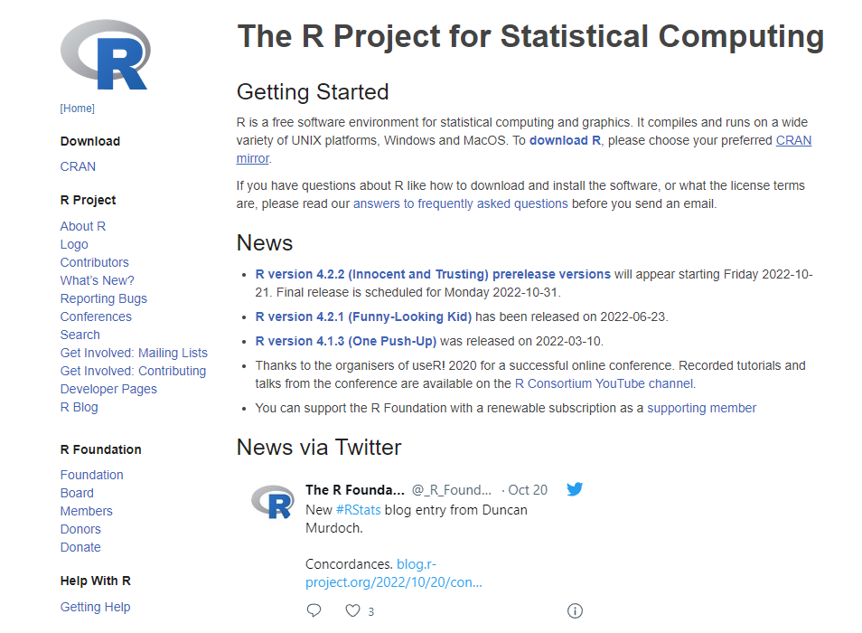
A Instalação do RStudio
- Selecionar a versão gratuita (FREE);
- Escolher o sistema operacional utilizado;
- Fazer a instalação mantendo as opções default.
Objetos, Funções e Argumentos
Objetos são maneiras simples de acessar algo que foi salvo na memória da máquina. Pode ser um valor, uma palavras, uma ou mais variáveis, uma URL, uma base de dados amostral ou populacional, etc. No R TUDO é um objeto! Cada um desses objetos possui uma classe!
Funções correspondem a ações, a ordens direcionadas à máquina;
Argumentos correspondem a um refinamento ou um melhor direcionamento das ações ou ordens propostas pelas funções.
Criando um objeto no R
Existem duas formas de se criar um objeto na linguagem R:
O sinal de atribuição pode ser rapidamente declarado ao se pressionar conjuntamente as teclas ‘Alt’ e ‘-’ (para Windows e Linux) ou ‘Option’ e ‘-’ (para Mac).
Criando um objeto no R
Os nomes dos objetos estabelecidos em R devem seguir certas regras:
Error: <text>:3:2: unexpected symbol
2:
3: 2x
^Criando um objeto no R
Os nomes dos objetos estabelecidos em R devem seguir certas regras:
Error in !x <- 1:6: não foi possível encontrar a função "!<-"- Recomenda-se não utilizar os mesmos nomes de funções já estabelecidas;
- Recomenda-se não utilizar acentos e letras maiúsculas
Tipos básicos
- Integer
inteiro <- 1 - Numeric
numeric <- 1.4 - Logical
5 > 1/TRUE - String
"Marcelo"
Tipos complexos
Vector
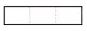Matrix
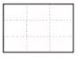Data Frame
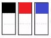List
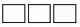
Utilizando Funções e Argumentos no R
Para utilizar uma função no R, devemos conhecer sua forma funcional, isto é, devemos, em regra, declarar os argumentos inerentes a ela. Exemplo de utilização da função round():
round() - (função)
x - (vetor)
digits= - (argumento)
Principais funções introdutórias do R:
| Função R | Serve para: |
|---|---|
| c() | Declarar mais de um valor e/ou objeto |
| args() | Verificar os argumentos de uma dada função no R |
| sample() | Criar amostras |
| class() | Verificar as classes dos objetos do R |
| View() | Visualizar objetos em um formato semelhante ao de uma planilha |
| head() | Visualizar as primeiras observações de uma base de dados |
| tail() | Visualizar as últimas observações de uma base de dados |
| str() | Observar a estrutura de uma base de dados |
| length() | Observar o comprimento de um vetor ou de uma lista de dados |
| dim() | Descobrir as dimensões de um objeto |
| nrow() | Contar o número de linhas de uma base de dados |
| ncol() | Contar o número de colunas de uma base de dados |
| rm() | Remover um objeto do ambiente de trabalho |
| install.packages() | Instalar pacotes |
Funções para estatísticas básicas no R:
| Função R | Estatística |
|---|---|
sum() |
Soma de valores |
mean() |
Média |
var() |
Variância |
median() |
Mediana |
summary() |
Resumo Estatístico |
quantile() |
Quantis |
Funções
O Rstudio possui a função auto complete (ctrl + barra de espaço).
Para saber como informar os parâmetros corretamente coloque o cursor no nome da função e pressione F1 para ver a documentação de funções.
Formas de acessar o help:
help.search('log') - procurar por um palvras chaves
RSiteSearch('log') - busca no site do R
?nome.da.função() - ex: log()
??nome.da.função() - funções que não estão ‘instalados’
Outros tópicos
Controle de Fluxo: Como toda boa linguagem de programação, o R possui estruturas de if, else, for e while.
ifeelseservem para executarmos um código apenas se uma condição (teste lógico) for satisfeitaforrepetir uma mesma tarefa para um conjunto de valores diferenteswhilerepetir uma mesma tarefa enquanto a condição for respeitada
Outros tópicos
Além de usar funções já prontas, você pode criar a sua própria função. A sintaxe é a seguinte:
Exemplo:
Instalação de pacotes
Existem três principais maneiras de instalar pacotes. Em ordem de frequência, são:
- Via CRAN (Comprehensive R Archive Network):
install.packages("nome-do-pacote"). - Via Github:
devtools::install_github("nome-do-usuario/nome-do-repositorio"). - Via arquivo .zip/.tar.gz:
install.packages("~/nome-do-pacote.zip", repos = NULL).
Instalação de pacotes
Pacotes que fazem parte do ciclo da ciência de dados
Importar dados;
install.packages('readr')Manipulação e exploração;
install.packages('tidyr')install.packages('dplyr')Visualização de dados.
install.packages('ggplot2')
Importando dados com readr
O R base possui funções para leitura dos principais tipos de arquivos.
readr: .csv e .txt são as extensões mais comuns
readxl: para extensões .xlsx e .xls
instalando o pacote readxl
Manipulando os dados com dplyr
Funções básicas:
filter: filtra linhasselect: seleciona colunascount: contabiliza os dados por variávelarrange: ordena a basemutate: cria/modifica colunasgroup_by/summarize: agrega e sumariza a base
Pacote dplyr
função filter() manter ou discartar linhas
== operador de igualdade
<= operador de menor ou igual
>= operador de maior ou igual
!= operador de diferença
Operadores lógicos E(&), OU(|) e NÃO (!)
O pipe em ação
O pipe é muito ultil quando queremos aplicar mais de uma função de manipulação em uma base.
function(data, argument(s))
utizando o |>
Pacote dplyr
função select manter ou descartar colunas
Eliminar coluna com -column
Pacote dplyr
função arrange ordenar o dataset por variável
Use desc() para decrescer a ordem
Pacote dplyr
função count contabiliza os dados de uma determinada variável
Pacote dplyr
função mutate criar nova variável (com um =)
Pode ser combinado com uma ou mais condições ifelse, que tem 3 argumentos:
(condição, valor se TRUE, valor se FALSE)
Pacote dplyr
função case_when() para múltiplas condições
Pacote dplyr
funções group_by/summarize
group_by() identifica os grupos da variavel
summarize() especificar a agregação
Também podem ser combinados mean, median, min, n
Pacote dplyr
Existem duas formas de junção de dados: UNIÂO e CRUZAMENTO
bind_cols e bind_rows para vincular dois ou mais dataset em um.
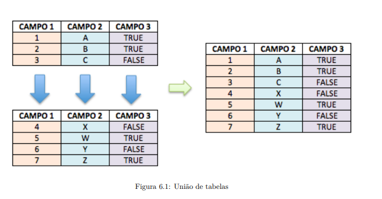
Pacote dplyr
R tem muitas funções úteis para lidar com dados relacionais
tudo o que você precisa é de pelo menos uma variável em comum entre os conjuntos de dados
left_join é a mais comum
Pacote dplyr
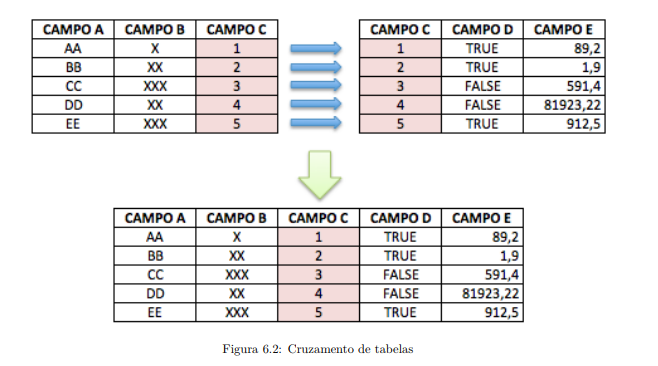
Pacote dplyr
Além da função left_join(), também são muito utilizadas as funções right_join() e full_join().
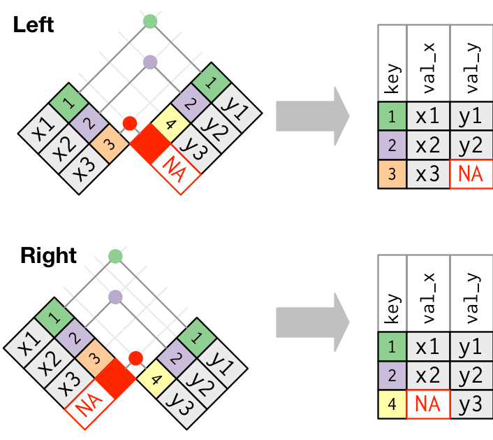
Pacote dplyr
Além da função left_join(), também são muito utilizadas as funções right_join() e full_join().
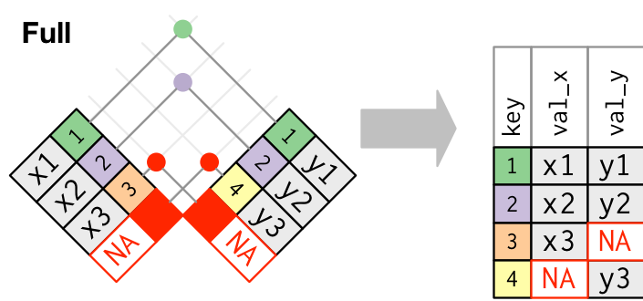
O pacote stringr
Permite a manipulação de textos por meio de uma sintaxe consistente e com muita facilidade.
Regras básicas do pacote:
- As funções de manipulação de texto começam com
str_ - O primeiro argumento da função é sempre uma string ou um vetor de strings.
O pacote stringr
Funções básicas:
str_length()retorna o número de caracteres de cada elemento do vetorfunções para modificar a caixa das letras
O pacote stringr
Funções básicas:
str_trim()remove os espaços excedentes antes e depois da stringstr_sub()obter uma parte fixa de uma stringstr_c()análoga à funçãopaste0()do R base, concatena strings em uma única string.
O pacote tidyr
separate() e unite(): para separar variáveis concatenadas em uma única coluna ou uni-las.
O pacote tidyr
pivot_wider() e pivot_longer(): para pivotar a base.
## passando colunas para linhas
imdb_atuacao %>%
pivot_longer(
cols = starts_with("atuacao"),
names_to = "protagonismo",
values_to = "ator_atriz"
) %>%
select(titulo, ator_atriz, protagonismo) %>%
head(6)
## passando linhas para colunas
imdb_atuacao %>%
pivot_longer(
cols = starts_with("atuacao"),
names_to = "ator_protagonismo",
values_to = "ator_nome"
) %>%
pivot_wider(
names_from = "ator_protagonismo",
values_from = "ator_nome"
) %>%
head(4)tidyverse
carrega oito pacotes principais quando invocado e também agrupa outros pacotes na instalação
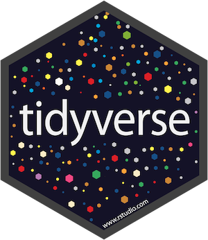
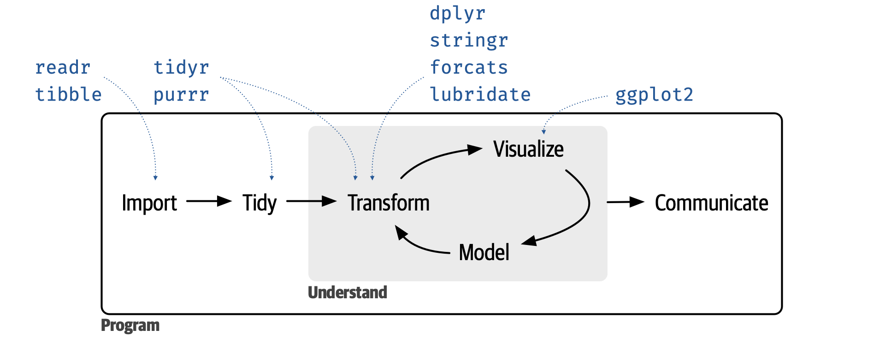
tidyverse
Na prática, carregar o {tidyverse} é o mesmo que carregar os seguintes pacotes:
{
tibble} para data frames repaginados;{
readr} para importarmos bases para o R;{
tidyr} e {dplyr} para arrumação e manipulação de dados;{
stringr} para trabalharmos com textos;{
forcats} para trabalharmos com fatores;{
ggplot2} para gráficos;{
purrr} para programação funcional.
Introdução